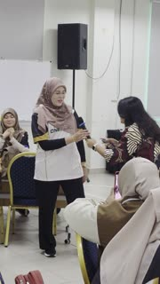

m62ddce82 · 20261127_093628.mp4
path 20261127_093628.mp4 · sha256 a21dc40f864c4686… · source id 1f4rD1KS4kBxAkZPVOpJrtvXUwqfJ2Hg7 · modified 2026-11-27T03:10:14.930Z
probe {"duration": 146.792375, "size": 638291897, "format": "mov,mp4,m4a,3gp,3g2,mj2", "created": "2026-11-27T01:38:56.000000Z", "video": {"codec": "hevc", "w": 2160, "h": 3840, "fps": 29.99, "rotation": -90, "pix_fmt": "yuv420p10le", "frames": 4400, "hdr": true}, "audio": {"codec": "aac", "rate": 48000, "channels": 2}}
quality {"frames_decoded": 4398, "luma_mean": 574.5, "dark_pct": 0.0, "bright_pct": 100.0, "sat_mean": 18.2}
Frame index (every decoded frame: n, pts, scene score, luma, saturation): frames.jsonl.gz · contact sheet

Semantic notes cover sampled thumbnails/contact sheet (semantic notes are not per-frame); frame metadata is exhaustive.
Annotated moments
| t | shot | action | speaker | dialogue | emotion | quality | use |
|---|
Thumbnails



Transcript
machine transcript, verify names
| 0.13–10.00 | Hello everyone, I am Suwanthi Nathongisang, I am a director of the Government of Singapore. |
| 10.00–16.00 | I I have worked as a KPJ for Special Exhospital since 1992. |
| 16.12–23.00 | I have worked for 4,000 years. |
| 23.12–31.00 | I have been working as a KPJ for 4,000 years. |
| 31.00–35.00 | I I have worked as a KPJ for 4,000 years. |
| 35.00–39.00 | I I have worked as a KPJ for 4,000 years. |
| 39.00–43.00 | I I have worked as a KPJ for 4,000 years. |
| 43.00–47.00 | I I have worked as a KPJ for 4,000 years. |
| 47.00–51.00 | I I have worked as a KPJ for 4,000 years. |
| 51.00–53.00 | I I have worked as a KPJ for 4,000 years. |
| 53.00–55.00 | I I have worked as a KPJ for 4,000 years. |
| 55.00–57.00 | I I have worked as a KPJ for 4,000 years. |
| 57.00–59.00 | I I have worked as a KPJ for 4,000 years. |
| 59.00–61.00 | I I have worked as a KPJ for 4,000 years. |
| 61.00–63.00 | I I have worked as a KPJ for 4,000 years. |
| 63.00–65.00 | I I have worked as a KPJ for 4,000 years. |
| 65.00–67.00 | I I have worked as a KPJ for 4,000 years. |
| 67.00–69.00 | I I have worked as a KPJ for 4,000 years. |
| 69.00–71.00 | I I have worked as a KPJ for 4,000 years. |
| 71.00–73.00 | I I have worked as a KPJ for 4,000 years. |
| 73.00–75.00 | I I have worked as a KPJ for 4,000 years. |
| 75.00–77.00 | I I have worked as a KPJ for 4,000 years. |
| 77.00–81.00 | I I have worked as a KPJ for 4,000 years. |
| 81.00–83.00 | I I have worked as a KPJ for 4,000 years. |
| 83.00–85.00 | I I have worked as a KPJ for 4,000 years. |
| 85.00–87.00 | I I have worked as a KPJ for 4,000 years. |
| 87.00–89.00 | I I have worked as a KPJ for 4,000 years. |
| 89.00–91.00 | I I have worked as a KPJ for 4,000 years. |
| 91.00–93.00 | I I have worked as a KPJ for 4,000 years. |
| 93.00–95.00 | I I have worked as a KPJ for 4,000 years. |
| 95.00–97.00 | I I have worked as a KPJ for 4,000 years. |
| 97.00–99.00 | I I have worked as a KPJ for 4,000 years. |
| 99.00–101.00 | I I have worked as a KPJ for 4,000 years. |
| 101.00–103.00 | I I have worked as a KPJ for 4,000 years. |
| 103.00–105.00 | I I have worked as a KPJ for 4,000 years. |
| 105.00–107.00 | I I have worked as a KPJ for 4,000 years. |
| 107.00–109.00 | I I have worked as a KPJ for 4,000 years. |
| 109.00–111.00 | I I have worked as a KPJ for 4,000 years. |
| 111.00–113.00 | I I have worked as a KPJ for 4,000 years. |
| 113.00–115.00 | I I have worked as a KPJ for 4,000 years. |
| 115.00–117.00 | I I have worked as a KPJ for 4,000 years. |
| 117.00–119.00 | I I have worked as a KPJ for 4,000 years. |
| 119.00–121.00 | I I have worked as a KPJ for 4,000 years. |
| 121.00–123.00 | I I have worked as a KPJ for 4,000 years. |
| 123.00–125.00 | I I have worked as a KPJ for 4,000 years. |
| 125.00–127.00 | I I have worked as a KPJ for 4,000 years. |
| 127.00–129.00 | I I have worked as a KPJ for 4,000 years. |
| 129.00–131.00 | I I have worked as a KPJ for 4,000 years. |
| 131.13–135.00 | That's all I can share. |
| 135.13–137.12 | This is the KPJ that I have worked as a KPJ for 4,000 years. |
| 137.12–139.00 | This This is the KPJ that I have worked as a KPJ for 4,000 years. |
| 139.12–141.00 | This is the KPJ that I have worked as a KPJ for 4,000 years. |
| 141.12–143.00 | This is the KPJ that I have worked as a KPJ for 4,000 years. |
| 143.12–145.00 | This is the KPJ that I have worked as a KPJ for 4,000 years. |
| 145.00–146.79 | This This is the KPJ that I have worked as a KPJ for 4,000 years. |